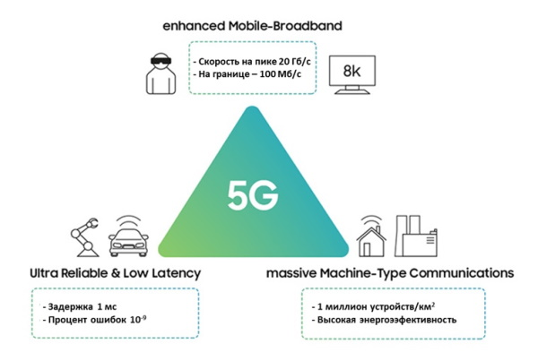

Каких технологий ждать в 2023 году
-
5G/6G сети
Мобильные сети 5G получают все большее распространение. Сейчас практически у каждого производителя смартфонов
в линейке есть гаджеты с поддержкой сетей 5G. Новое поколение сетей предлагает куда большую скорость до 20
Гбит/с и минимальные задержки.

К сожалению, в России сети 5G находятся пока в тестовом режиме — в Санкт-Петербурге, Москве, Казани,
Екатеринбурге и некоторых других крупных городах установлены до четырех тестовых вышек. Даже если 5G начнет
массовое внедрение, пользователей ждет повышение цен на связь вплоть до 50 %, поскольку операторам придется
массово закупать и без того дорогостоящее оборудование. Может дойти до того, что полностью отключат 3G — тут
рассказали об этом подробно.
Впрочем, положительные тенденции есть. Например, совсем недавно в России разрешили использовать частоты
5,9–6,4 ГГц для стандарта связи Wi-Fi 6E. Ранее пользователям был доступен «обычный» Wi-Fi 6 на частотах 2,4 и
5 ГГц. Версия 6E открывает частоты от 6 ГГц, которые предложат большее число каналов.